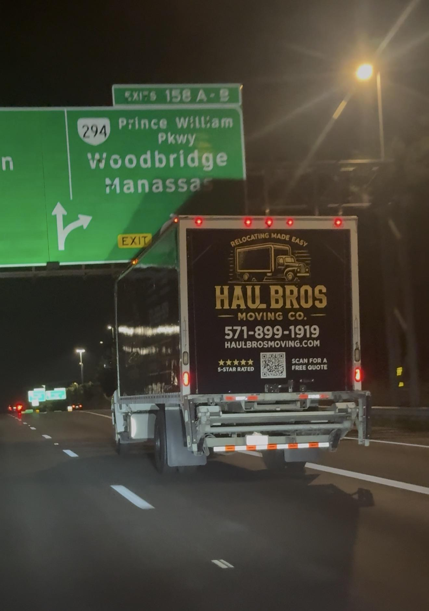

How to Find Reputable Moving Companies in Fairfax County, VA
Learn how to vet moving companies in Fairfax County: licensing, red flags, and where to file complaints. Free quote from Haul Bros Moving Co LLC.

Moving in Fairfax County can mean a high-rise condo in Tysons, a townhome in Burke or Centreville, or a single-family home in McLean or Vienna. But picking the wrong company can mean damaged furniture, surprise charges, or belongings held until you pay more.
This guide walks through how to check a mover's credentials, what to ask, which red flags to watch for, and where to go if something goes wrong.
Quick answer: how do you find a reputable mover in Fairfax County?
Confirm the authority required for your route, get a written estimate, check recent reviews on several sites, ask about insurance and claims, and be cautious of large upfront payments.
Step 1: Verify the license
Virginia DMV says local household-goods movers generally need Property Carrier authority for moves of 30 miles or less, or Household Goods Carrier authority for longer moves within Virginia, unless exempt. A household goods carrier transporting only household goods does not need separate property authority for shorter moves.
Check the Virginia DMV carrier listing for intrastate moves. For interstate moves, check FMCSA registration and the authority required to transport household goods. A USDOT number alone does not establish that authority. Haul Bros lists USDOT #4497497; verify the credentials applicable to your route before booking.
Step 2: Confirm insurance
Ask for evidence of applicable cargo and liability coverage, and ask how shipment valuation limits affect reimbursement for damaged belongings. Carrier insurance and the protection available for your individual shipment are not necessarily the same thing.
Ask how to submit a written loss or damage claim, which deadlines apply, and what records to keep. Short local moves are not exempt from all requirements: Virginia DMV's property-carrier guidance includes household-goods claim handling obligations.
Step 3: Get written estimates
Request two or three written estimates based on the same inventory, and compare them line by line:
Hourly rate versus flat rate
Minimum hours and travel time
Crew size and truck size
Fees for stairs, long carries, or heavy items
Packing materials and labor
A quote given over the phone without any details about your belongings is a warning sign. A video walkthrough or a detailed inventory is better.
Step 4: Read reviews on more than one site
Check Google, Yelp, Angi, Birdeye, and the BBB. Look for patterns rather than single reviews: on-time arrival, careful handling, and a final price that matched the estimate. Read the negative reviews and see how the company responded.
For Haul Bros and other companies, check the original review platforms for current ratings and recent comments. Review counts change over time.
Step 5: Watch for red flags
No physical address, or only a lead-generation website
A quote far below every other estimate
A large cash deposit demanded upfront
No written contract or inventory
Refusal to provide a USDOT number or proof of insurance
Blank or vague paperwork
Pressure to sign immediately
Step 6: Know where to file a complaint
If a problem arises, contact the mover in writing and keep estimates, contracts, photos, and payment records. Fairfax County directs moving-company consumer complaints to its Consumer Affairs Branch or the Virginia Office of the Attorney General. Licensing and consumer complaint processes are different. Do not assume a move of 30 miles or less is unregulated.
What to look for on moving day
The crew arrives in a marked truck with proper equipment (dollies, blankets, shrink wrap, floor protection).
You receive an inventory or written agreement before loading starts.
Furniture is wrapped and fragile items are protected.
You do a final walkthrough before the crew leaves.
Local Fairfax County factors that affect your move
Condo and apartment buildings in Tysons, Reston, and Merrifield may require elevator reservations and certificates of insurance.
HOA and townhome communities in Burke, Centreville, and Chantilly may limit move hours or truck size.
Traffic on I-66, I-495, and Route 7 makes start times matter.
Loading-zone parking can be tight in older neighborhoods.
Ask any mover you're considering how they handle these, and whether they've moved in your neighborhood before.
Why Fairfax County residents choose Haul Bros Moving Co LLC
Haul Bros is a locally owned moving company based in Woodbridge, serving Fairfax, Springfield, Burke, Annandale, McLean, Vienna, Reston, Herndon, Centreville, Chantilly, and surrounding communities. Here's what you get:
Published local pricing: consult our pricing page and request a written estimate for your inventory, crew size, and route.
Furniture protection, loading, transportation, unloading, and standard furniture assembly, as agreed in your estimate.
Packing assistance available by arrangement; confirm packing labor and materials separately.
Apartment and condo planning around stairs, elevators, and parking.
Same-day moves subject to crew and truck availability.
Ask about current discount eligibility and qualifying charges before booking.
Frequently asked questions
How do I know if a moving company is licensed in Virginia?
For a move within Virginia, check the appropriate Virginia DMV operating authority. For an interstate household move, verify FMCSA registration and applicable household-goods authority. Ask for the company’s full legal name and identifying numbers.
Where do I file a complaint against a mover in Fairfax County?
With the Fairfax County Consumer Affairs Branch or the Virginia Office of the Attorney General.
What should be in a moving estimate?
Rate type, minimum hours, crew and truck size, extra fees, and packing charges, all in writing.
Are cheap movers worth the risk?
Price alone does not establish reliability. If an estimate is much lower than others, ask which services and charges it includes, and compare credentials and written terms before booking.
How far ahead should I book?
Start comparing movers as soon as your likely date is known. Several weeks of lead time can give you more choices, but availability varies; contact the mover to confirm your date.
Does Haul Bros serve Fairfax County?
Yes. We serve Fairfax, Springfield, Burke, Annandale, McLean, Vienna, Reston, Herndon, Centreville, Chantilly, and more.
Get a free moving quote in Fairfax County
571-899-1919 · relocating@haulbrosmoving.com
📍 2623 River Basin Ln, Woodbridge, VA 22191
Explore moving services in Fairfax County
Fairfax movers · Springfield movers · Burke movers · Tysons movers · Apartment movers